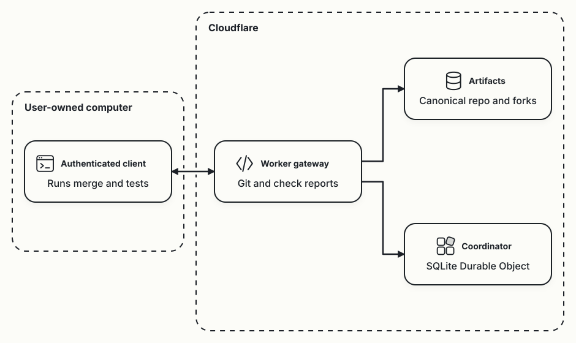
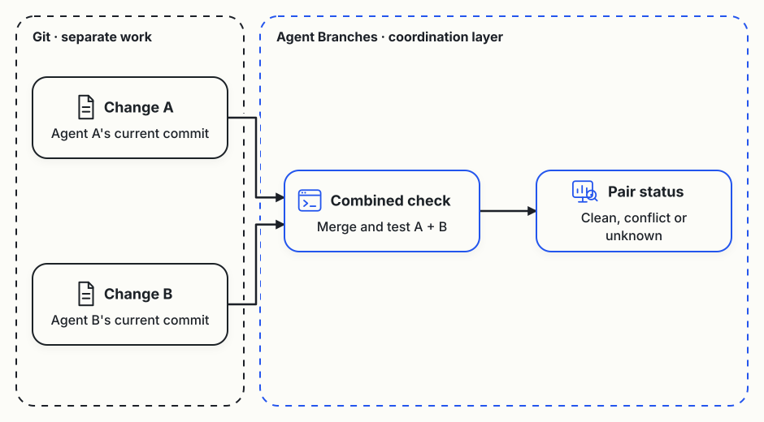
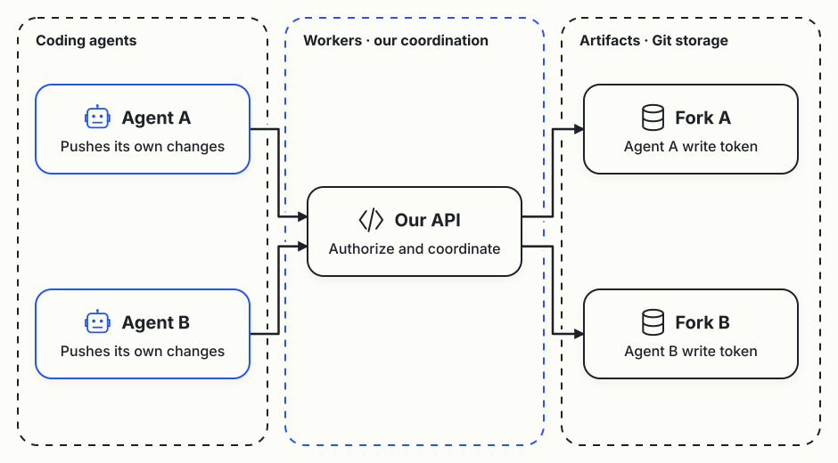
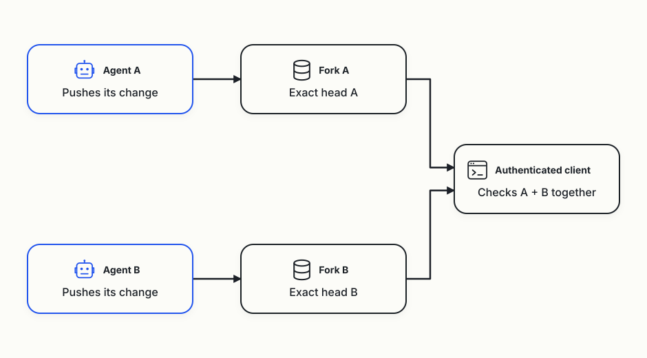
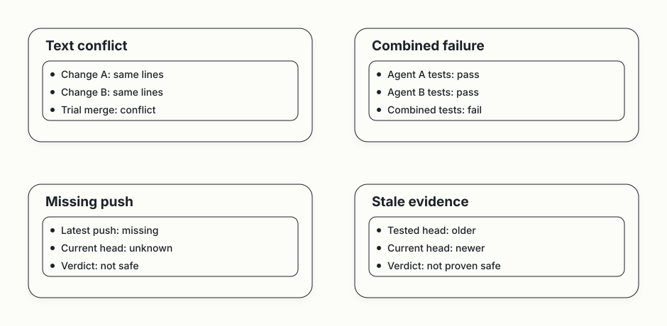

AGENT BRANCHES · DEMOConceptual diagrams
Git in the cloud, tests on your computer
Cloudflare hosts Git storage and coordination. Your authenticated client handles code checks on a user-owned computer. The coordinator records reports and never executes agent code.

A coordination layer on top of Git
Git already manages changes. Agent Branches tracks agents' current commits, checks their changes together and shows failures or missing evidence. The same idea can use Artifacts forks or Git worktrees.

Artifacts stores Git, Workers coordinates agents
Each agent writes to its own fork in Artifacts. Our Worker API handles permissions, tasks and check reports.

Separate forks, one combined check
Each agent pushes to its own fork. The authenticated client checks both exact head commits together. In the smoke demo, it runs a Git merge-tree check and submits typed reports. Application test failures appear in the UI fixtures.

Four reasons a pair isn't safe
A clean merge alone can't establish safety. Tests can fail when changes are combined, a push can be missing, or checks can refer to older heads. These examples explain the local fixture screens.

Use ← and → to change diagrams. These pictures explain the protocol, while the terminal report provides run evidence. On a narrow screen, scroll across the picture to read every label.